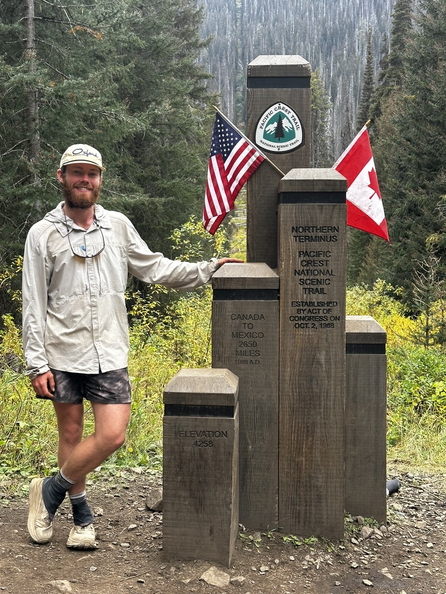

The Pacific Crest Trail stretches 2,650 miles from the Mexican border through California, Oregon, and Washington to the Canadian border. This iconic trail traverses through some of the most stunning and diverse landscapes in the American West -- from the scorching Mojave Desert to the volcanic peaks of the Cascades.
Thru-hiked in 2025, the PCT was the ultimate test of endurance and commitment, pushing through extreme heat, high-altitude snow crossings, and everything in between across five months on trail.

Northern Terminus · Canadian Border